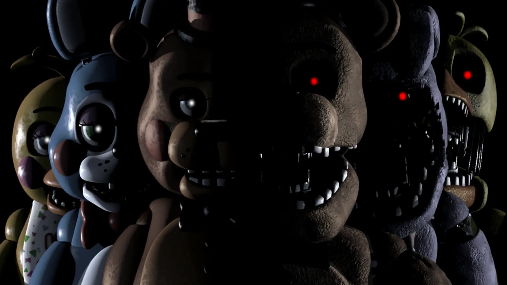

🐻 Five Nights at Freddy's (FNAF)

Género: Terror / Survival Horror
Desarrollador: Scott Cawthon
Lanzamiento del primer juego: 8 de agosto de 2014
Plataformas: PC, Android, iOS, Nintendo Switch, PlayStation, Xbox
Estado: Activa (con película estrenada en 2023)
📖 Sinopsis general
Five Nights at Freddy's (FNAF) es un juego de terror indie que se convirtió en un fenómeno global. La premisa es simple pero aterradora: eres un guardia de seguridad nocturno en Freddy Fazbear's Pizza, un restaurante familiar al estilo Chuck E. Cheese, famoso por sus espectáculos con robots animatrónicos de tamaño real.
Tu trabajo consiste en vigilar el local desde una pequeña oficina de seguridad, de 12 de la noche a 6 de la mañana, durante cinco noches consecutivas. El problema es que por la noche, los animatrónicos —Freddy Fazbear, Bonnie el Conejo, Chica la Gallina y Foxy el Zorro Pirata— deambulan libremente por el restaurante. Según las llamadas que recibes de tu predecesor, si te ven, te confundirán con un endoesqueleto metálico sin traje e intentarán "ayudarte" metiéndote a la fuerza en uno. El resultado es una muerte espantosa.
🎮 Mecánicas principales del primer juego
FNAF es un juego de tipo "point-and-click" y gestión de recursos. No puedes moverte de tu silla. Tu única interfaz con el mundo exterior es:
- 📹 Cámaras de seguridad: Te permiten rastrear la ubicación de los animatrónicos por el restaurante. Tienes 11 cámaras para vigilar.
- 🚪 Puertas metálicas: Hay dos puertas (izquierda y derecha) que puedes cerrar para bloquear el paso a los animatrónicos. Cada segundo que están cerradas consume energía.
- 💡 Luces de los pasillos: Puedes encender las luces de cada pasillo para ver si hay un animatrónico en el umbral de tu puerta.
- 🔋 Indicador de energía: Comienzas la noche con 100% de batería. Usar cámaras, luces o mantener puertas cerradas consume energía. Si se acaba antes de las 6 AM, las luces se apagan, las puertas se abren y Freddy te atacará en la oscuridad.
😱 Los jumpscares
La fama del juego se debe en gran parte a sus jumpscares. Si fallas y un animatrónico entra a tu oficina, el juego termina con un grito ensordecedor mientras el rostro del animatrónico llena la pantalla. Es la razón principal por la que los youtubers hicieron viral el juego.
👥 Personajes principales
- Freddy Fazbear: El líder de los animatrónicos, un oso cantante. Es el más peligroso. Permanece inactivo las primeras noches, pero se vuelve más agresivo. Ataca cuando se acaba la energía y se anuncia con su característica risa.
- Bonnie the Bunny: Un conejo morado con una guitarra roja. Es uno de los más activos desde el principio. Se acerca exclusivamente por la puerta izquierda.
- Chica the Chicken: Una gallina amarilla que lleva un cupcake. Se acerca por la puerta derecha. A menudo se la puede oír haciendo ruido en la cocina.
- Foxy the Pirate Fox: Un zorro pirata rojo que se encuentra detrás de una cortina en la "Cueva del Pirata". Si no se le vigila lo suficiente (o se le vigila demasiado), correrá por el pasillo izquierdo hacia tu oficina. Hay que cerrar la puerta a tiempo para detenerlo.
- Golden Freddy: Un animatrónico fantasmal y uno de los más peligrosos. Aparece de forma aleatoria como una imagen distorsionada en tu oficina.
👤 Personajes humanos
- Mike Schmidt: El protagonista del primer juego, el guardia de seguridad.
- Phone Guy (Chico del Teléfono): El guardia anterior que te deja mensajes de voz cada noche explicándote cómo sobrevivir. Es interpretado por el propio Scott Cawthon.
📜 El lore (historia oculta)
Una de las razones del éxito de FNAF es su increíblemente profundo lore (historia oculta), que los fans han ido descifrando pieza por pieza a través de pistas escondidas en los juegos.
🏭 El origen: Fredbear's Family Diner
Todo comenzó entre 1980 y 1982 con Fredbear's Family Diner, el primer restaurante. Fue abierto por dos amigos: Henry (mecánico talentoso) y William Afton (hombre de recursos). Las principales atracciones eran Fredbear (un oso dorado) y Spring Bonnie (un conejo amarillo).
💀 William Afton: "The Purple Guy"
William Afton es el villano principal de toda la saga. Aunque aparentaba ser un empresario exitoso, escondía un lado oscuro: una de sus pasiones era asesinar niños. Es conocido como "The Purple Guy" (el Hombre Morado) por cómo aparece representado en los minijuegos.
👧 Elizabeth Afton y Circus Baby
William abrió un local por su cuenta llamado Circus Baby's Pizza World, con nuevos animatrónicos llamados Funtime, diseñados específicamente para capturar niños. Pero el plan se torció cuando su propia hija, Elizabeth, ignoró sus advertencias y se acercó a Baby, su animatrónico favorito. Baby la absorbió en su interior y el alma de Elizabeth quedó atrapada en el robot.
😢 La muerte del hijo menor (Crying Child - 1983)
El hijo menor de William (conocido como Crying Child o Evan Afton) tenía pánico a los animatrónicos. Su hermano mayor, Michael, y sus amigos lo asustaban constantemente como una broma. En su cumpleaños, lo llevaron por la fuerza a Fredbear's Family Diner y metieron su cabeza dentro de la boca de Fredbear. El mecanismo se activó y el niño murió aplastado. Este evento se conoce como "The Bite of '83".
🔪 The Missing Children's Incident
William Afton, usando un traje de Spring Bonnie, atrajo a cinco niños a una habitación trasera y los asesinó. Sus almas quedaron atrapadas dentro de los animatrónicos principales: Freddy, Bonnie, Chica, Foxy y Golden Freddy. Puppet (la marioneta), que contiene el alma de la hija de Henry (Charlotte), fue quien puso las almas de los niños en los robots para que pudieran vengarse.
💀 La muerte de William Afton
Años después, William regresó al local abandonado de Fazbear's Pizza para destruir los animatrónicos y liberar las almas de los niños. Pero los espíritus de los niños lo acorralaron, y para protegerse, se metió dentro del viejo traje de Spring Bonnie. El mecanismo de resortes falló y el traje se cerró sobre él, matándolo de forma horrible. Su cuerpo quedó atrapado dentro, dando origen a Springtrap.
🎮 Evolución de la saga
- FNAF 1 (2014): El juego original. El más simple pero el que empezó todo.
- FNAF 2 (2014): Precuela del primero. Introduce una máscara de Freddy para engañar a los animatrónicos y una caja de música que debes mantener sonando para que Puppet no ataque.
- FNAF 3 (2015): Treinta años después del primer local. Solo hay un animatrónico: Springtrap (William Afton atrapado en el traje). Usas un dispositivo de audio para atraerlo hacia los sonidos.
- FNAF 4 (2015): La mecánica cambia completamente. Estás en la habitación de un niño (posiblemente Crying Child). No hay cámaras, solo debes escuchar la respiración de los animatrónicos y cerrar puertas. Es el juego más aterrador de la saga según los fans.
- FNAF: Sister Location (2016): Introduce a los animatrónicos Funtime (Baby, Funtime Freddy, Ballora, Funtime Foxy). Michael Afton (el hijo mayor) es el protagonista.
- FNAF 6: Pizzeria Simulator (2017): Mezcla la gestión de una pizzería con el terror. Es el final cronológico de la saga principal.
- Ultimate Custom Night (2018): Una compilación con 50 animatrónicos de toda la saga.
- FNAF: Security Breach (2021): El primer juego en mundo abierto. Gráficos modernos y jugabilidad completamente diferente.
🎬 La película (2023)
Después de años de espera, la película de Five Nights at Freddy's se estrenó en octubre de 2023, dirigida por Emma Tammi y producida por Blumhouse. Está protagonizada por Josh Hutcherson (Mike Schmidt) y Matthew Lillard (William Afton). La película fue un éxito de taquilla, recaudando más de $297 millones mundialmente con un presupuesto de solo $20 millones.
📚 Impacto cultural
FNAF es uno de los juegos indie más exitosos de la historia. Lo que comenzó como un proyecto de una sola persona (Scott Cawthon hizo prácticamente todo: programación, diseño, sonido, música) se convirtió en un fenómeno global con:
- Más de 10 juegos principales
- Una serie de libros (Fazbear Frights, The Silver Eyes, The Twisted Ones, The Fourth Closet)
- Películas en live-action
- Miles de fan games
- Una comunidad de fans que sigue descifrando el lore años después
📝 El origen del juego
Scott Cawthon, un desarrollador cristiano de Texas, había creado muchos juegos sin éxito. Uno de ellos, Chipper and Sons Lumber Co., fue duramente criticado porque los jugadores decían que sus personajes parecían "aterradores animatrónicos". En lugar de desanimarse, Scott decidió convertir esa crítica en la base de su próximo juego. Así nació Five Nights at Freddy's, lanzado en agosto de 2014. Los youtubers como PewDiePie lo hicieron viral y el resto es historia.
⭐ Puntuación general de la serie: ⭐⭐⭐⭐ (4/5 - Una saga única en la historia del terror indie)
← Volver a la lista de juegos